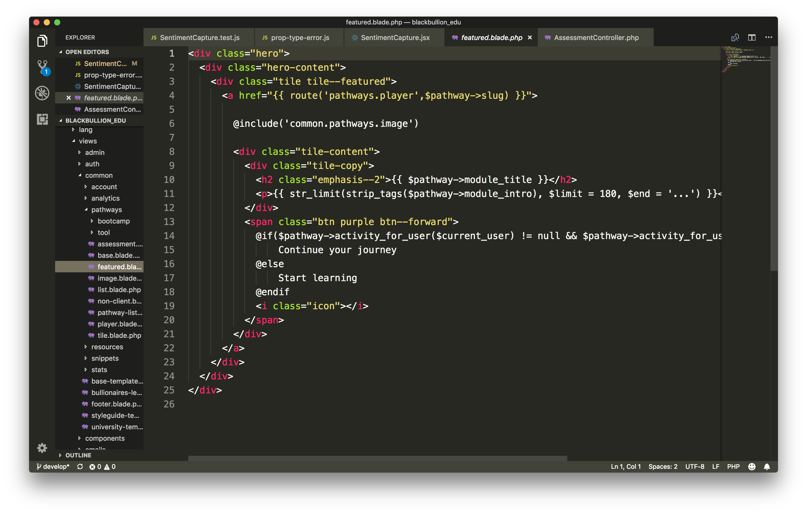
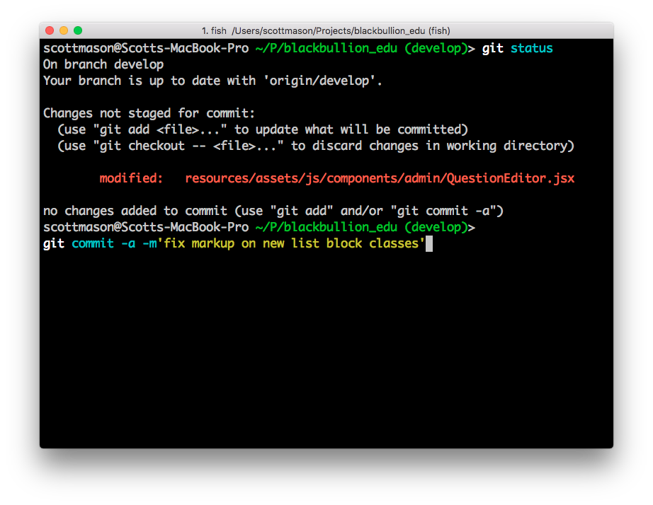
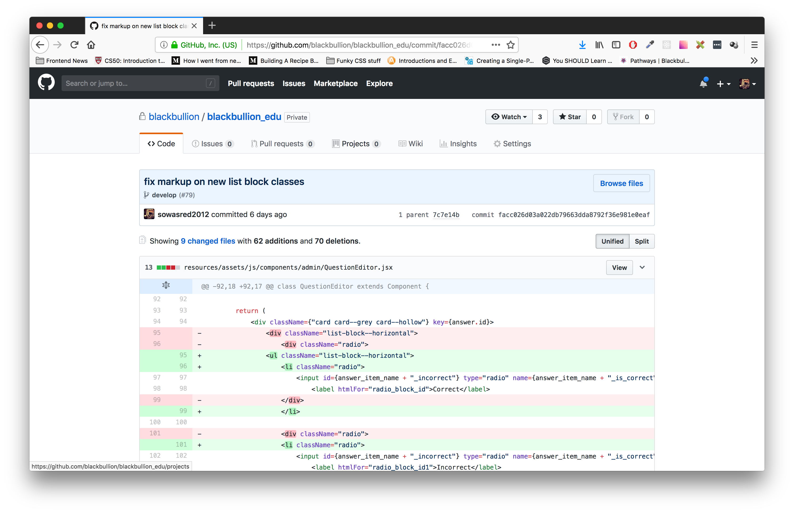
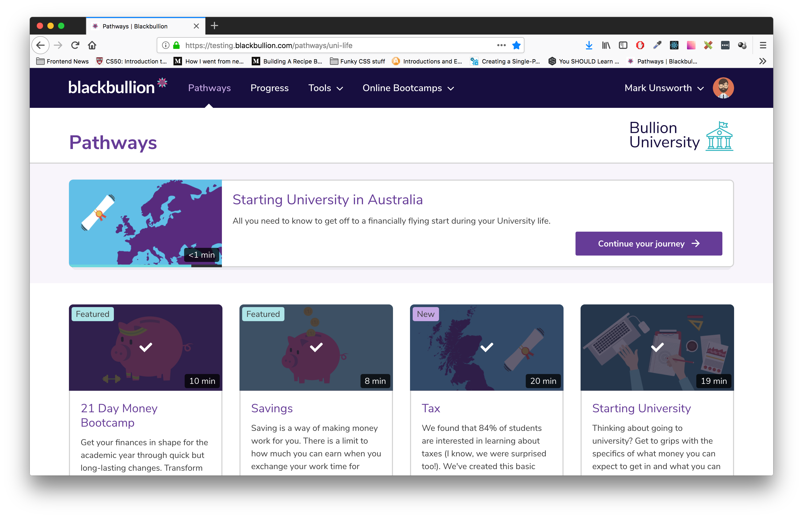
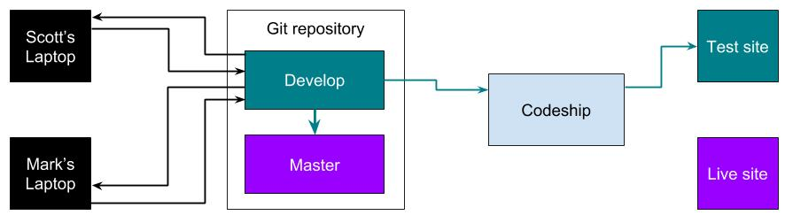
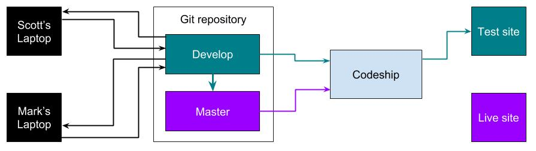

Our Development Process
& Git 101
What we'll be covering:
- Overview of the development process
- What git is
- Git 101
The development process:
- Write code locally
- Commit that code
- Push that commit to the git repository
- A build is triggered on Codeship
- Codeship deploys the build to testing.blackbullion.com
- We verify our work in test
- Merge the develop branch into master
- Another build is triggered on Codeship, which deploys the build to production
Write code locally
Commit that code

Push that commit to the git repository
git push origin develop
A build is triggered on Codeship
Codeship deploys the build to testing.blackbullion.com
We verify our work in test
Merge the develop branch into master
Another build is triggered on Codeship, which deploys the build to production
?????????
What is git?
Torvalds quipped about the name git (which means unpleasant person in British English slang):
"I'm an egotistical bastard, and I name all my projects after myself. First 'Linux', now 'git'."
Git 101
https://www.katacoda.com/courses/git